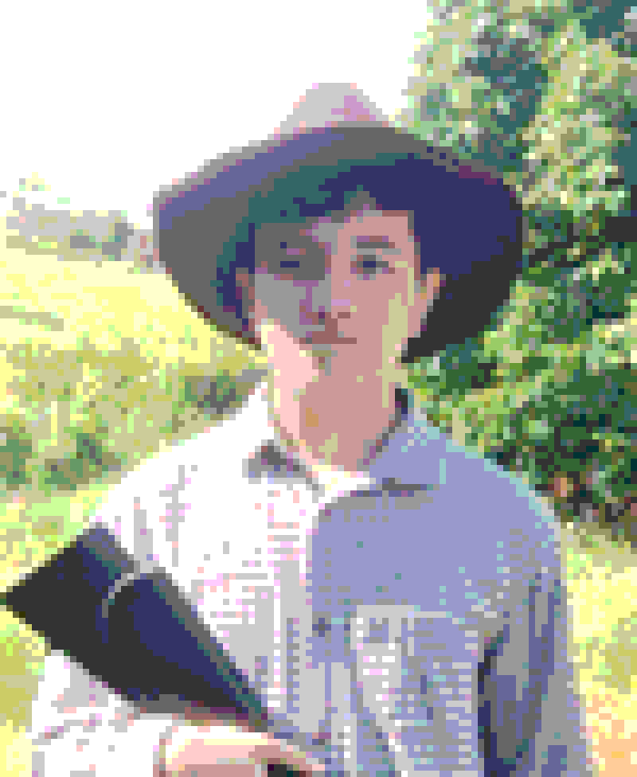

v1.0 — LEE SYSTEMS, 2026

PHOTO.BMP — 130×158 — 6-BIT COLOR
LUCA JIN LEE BARROS
// Game Developer & Software Engineer-in-training
| ORIGIN | Brazil — maternal heritage: South Korea |
|---|---|
| AGE | 17 (18 by Korean age reckoning) |
| ENGINES | Godot · Unity · GDevelop · Construct 2/3 |
| STATUS | ONLINE — open to collaboration |
Luca Jin Lee Barros is a Brazilian game developer and a 17-year-old student (18 in Korean age) with South Korean roots through his maternal family. He is currently enrolled in a technical high school program specializing in Digital Game Programming, where he studies game development, software engineering fundamentals, and interactive systems design.
Throughout his studies, he has worked with multiple game engines, including Godot, Unity, GDevelop, and Construct 2/3, adopting a flexible development approach based on the specific technical and design requirements of each project. His work primarily focuses on gameplay systems, rapid prototyping, and the practical application of software development principles within interactive media.
He is currently developing his final graduation project, which combines academic research and practical game development. The project investigates progression systems in digital games, examining how different progression models affect player engagement and retention. Alongside the research dissertation, he is developing an original game that applies the concepts explored in the study, serving as a practical case study for the project's conclusions.
Outside the classroom, Luca continues to expand his technical skills through independent projects and self-directed learning. His current interests include game systems design, software architecture, and the development of interactive experiences that combine technical implementation with player-focused design.
C:\LUCA\NETWORK> dir /a /external-links
C:\LUCA>_